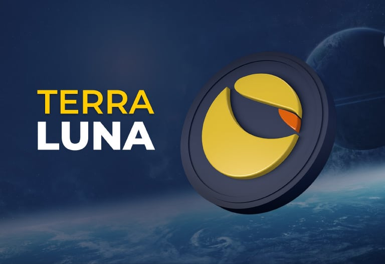
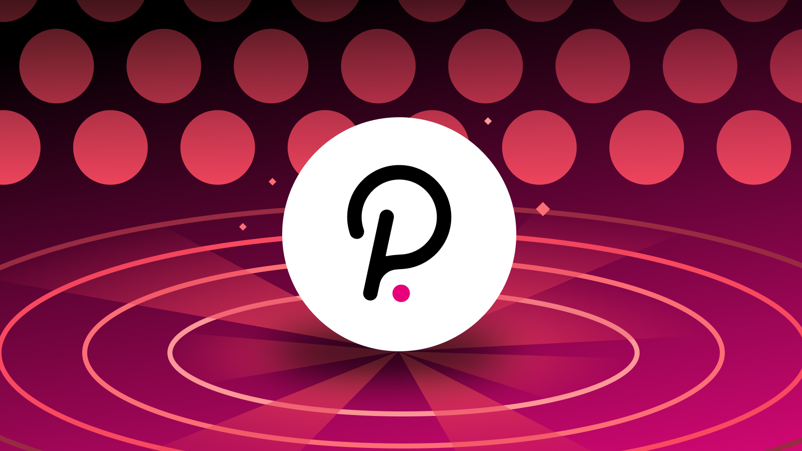

'MI TOP 3 CRYPTOS': INTRODUCCION A MIS 3 PROYECTOS PERSONALES EN CRYPTOMONEDAS
ETHEREUM
'Ethereum', El blockchain de Ethereum es muy similar al de bitcoin, pero su lenguaje de programación le permite a los desarrolladores crear software a través del cual gestionar las transacciones y automatizar
ciertos resultados. Este software se conoce como contrato inteligente.
LUNA
Luna: el token de participación nativo del protocolo Terra, que absorbe la volatilidad del precio de terra. Luna se utiliza para la gobernanza y la minería. Los usuarios apuestan luna a los validadores que registran y verifican las transacciones en la
cadena de bloques a cambio de recompensas. El mundo de las stablecoins es uno de los de mayor crecimiento en el mundo de las criptomonedas y, Terra (LUNA) es una clara muestra de esto. Terra es un proyecto con un claro objetivo: crear un framework
blockchain para el despliegue de aplicaciones DeFi que usan stablecoins nativas y el token LUNA. La idea es simple: usar el token LUNA para colateralizar de forma algorítmica stablecoins, y con ello habilitar al token LUNA como token de gobernanza
y pagos en la red Terra, y a las stablecoins para plataformas DeFi y pagos electrónicos. De esta manera, Terra crea un framework que otros pueden usar para ejecutar sus propias aplicaciones, sistemas de pagos estables y seguros desde cualquier
parte del mundo.

POLKADOT
Polkadot es un mecanismo de retransmisión que facilita las transacciones autenticadas de una cadena de bloques a otra. Proporciona seguridad compartida que es igual para todos los miembros, independientemente del protocolo que utilicen. Es un protocolo
de código abierto desarrollado para ser accesible a todo el mundo cuyo objetivo es permitir la evolución de la tecnología blockchain. Polkadot tiene como objetivo introducir interoperabilidad entre diferentes cadenas de bloques, permitiendo
que entre ellas puedan intercambiar datos y así conseguir desarrollar servicios y aplicaciones más potentes. Son muchos los proyectos que trabajan en desarrollar soluciones Atomic Swap. Esto no es más que permitir el intercambio de datos y
de criptomonedas entre diferentes blockchain. Vamos, que se busca que podamos intercambiar bitcoins por ether y viceversa sin depender de una exchange centralizada. Polkadot cuenta con blockchain individuales que se denominan parachains (blockchains
paralelas) y una cadena principal que recibe el nombre de Relay Chain. El objetivo es que la Relay chain y las parachains puedan intercambiar información con una gran facilidad.

DONDE PODEMOS COMPRAR CRYPTOMONEDAS ?
Las cryptomonedas se pueden comprar en unas plataformas donde se venden cryptomonedas y otros activos digitales que se llaman ' exchanges ' como por ejemplo este que uso personalmente que se llama COINMARKETCAP.